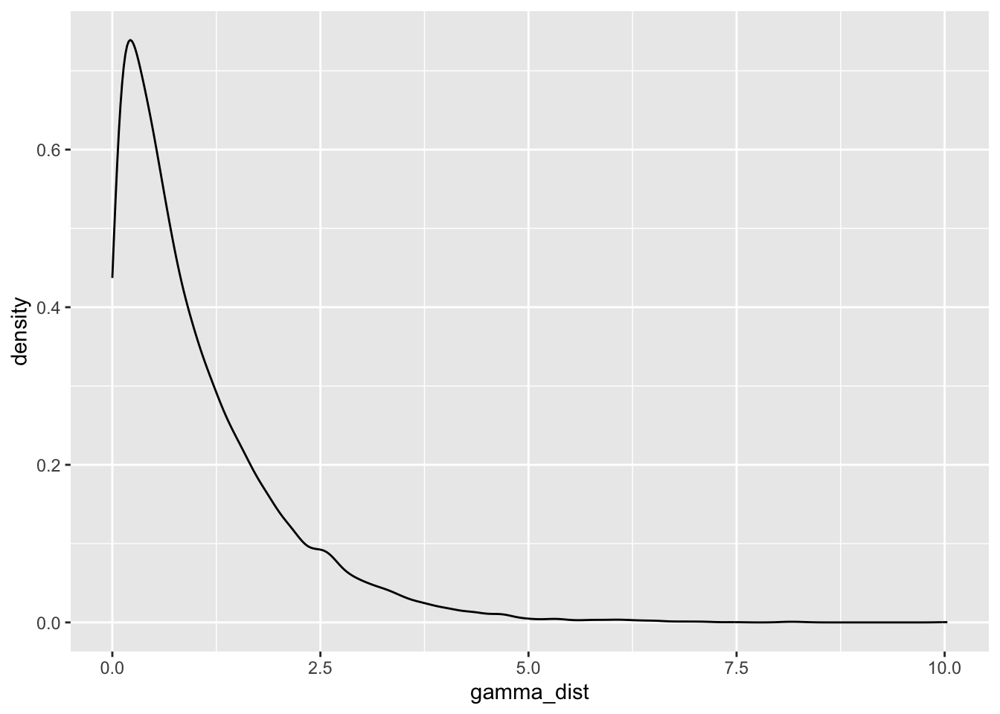
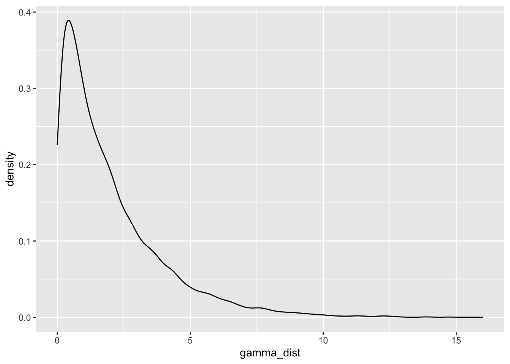
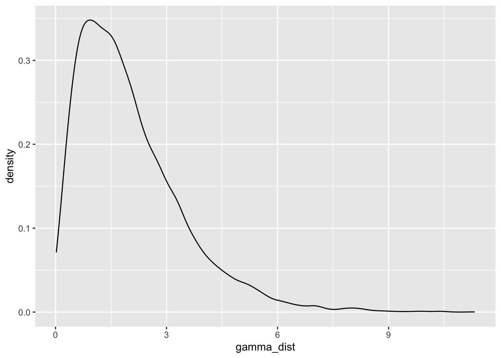
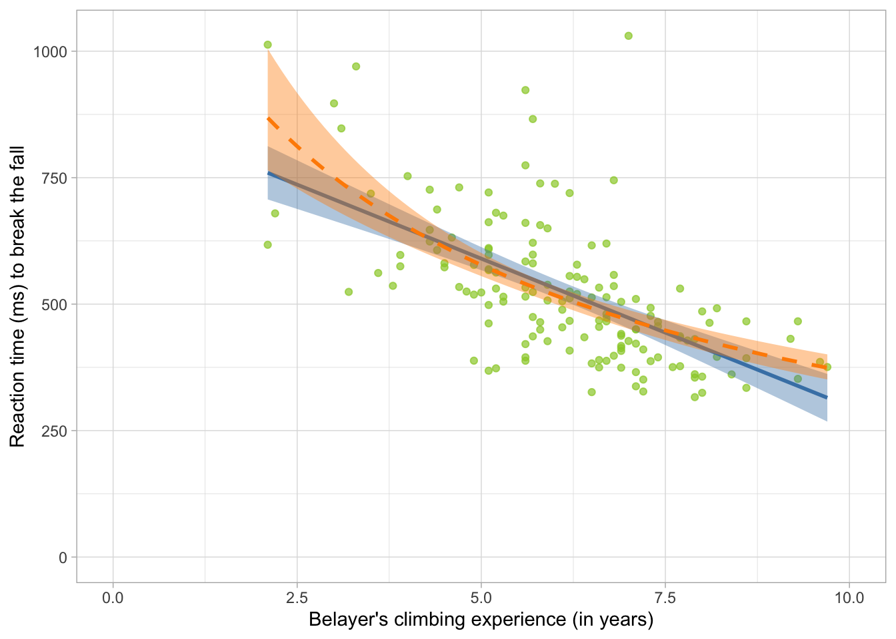
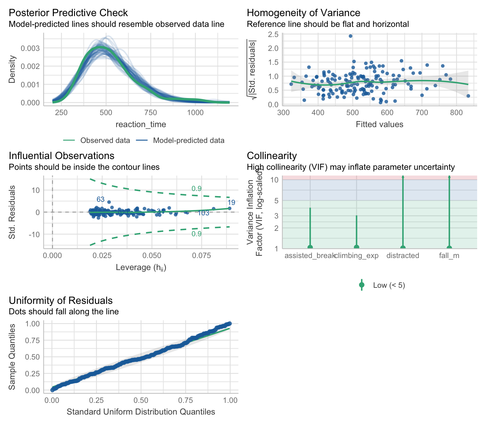
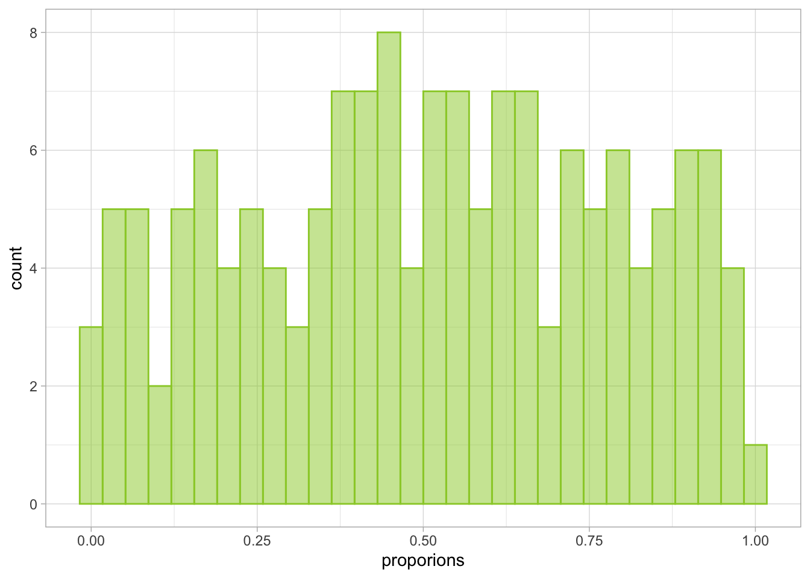

library(easystats)
library(tidyverse)
belay_tib <- here::here("data/climbing_data.csv") |>
readr::read_csv()1 Modelling skewness
In the previous section, we’ve learned about the limitations of fitting (robust or non robust) straight lines through data. If we make incorrect assumptions about the data-generating process, the predictions that our model generates are also going to be incorrect. Although robust methods have their uses, they don’t fix this issue and can sometimes make it worse by limiting predictions to the central portion of the distribution.
By assuming an alternative data generating process, we can model skewed distributions and make more accurate predictions for all the individuals from the distribution. In this section we’re going to introduce the Gamma distributional family for modelling positively skewed distributions.
We’ll be using the same scenario, so go back and remind yourself if you need to. If you started a new document for this section, you will also need to re-read the data and the packages:
1.1 Gamma models
Gamma models are used for modelling right skewed distributions. That is, skewed distributions with the tail on the right side. Unlike Gaussian distributions, which are defined by the mean and the standard deviation, Gamma distributions are defined by shape and scale parameters. These parameters define the extent of skewness and the length of tails, but how shape and scale work together to create a distribution is a little less intuitive than mean and SD in a normal distribution. So let’s have a look:
1gamma_dist <- rgamma(n = 10000, shape = 1, scale = 1)
2ggplot2::ggplot(data = NULL, aes(x = gamma_dist)) +
3 geom_density()- 1
-
Generate a gamma distribution. We’re generating 1000 data points
n = 1000. We’re also setting both theshapeandscaleto be equal to 1. Save the result to the object calledgamma_dist - 2
-
Initialise a ggplot.
gamma_distis just a vector of numbers, not a dataset. So we set thedataargument toNULL, and we usegamma_diston the x axis. - 3
- Add a density plot to show the distribution.

Shape and scale of 1 generate a very skewed distribution with a long right tail. How about changing the scale to 2?
gamma_dist <- rgamma(n = 10000, shape = 1, scale = 2)
ggplot2::ggplot(data = NULL, aes(x = gamma_dist)) +
geom_density()
If we change the scale, the tail becomes even longer and the distribution is more pointy. What if we change scale back to 1 and this time set shape to 2?
gamma_dist <- rgamma(n = 10000, shape = 2, scale = 1)
ggplot2::ggplot(data = NULL, aes(x = gamma_dist)) +
geom_density()
The mass of the distribution has slightly shifted to the right. There is a lot of flexibility in the kinds of distributions that can be modelled under the Gamma family, which makes it incredibly useful and broadly applicable.
Data visualisation
We’re going to recreate Figure 1, but this time, we’re also adding the prediction line for a would-be Gamma model. We do so by including the following line in the ggplot”
... +
stat_smooth(method = "glm", colour = "darkorange", fill = "darkorange",
method.args = list(family = "Gamma")) +
...method = "glm": we change this from “lm” to indicate that we’re fitting a generalised linear model, not a general linear model.colour = "darkorange", fill = "darkorange": these are the same as before, we’re just changing the colour codelinetype = "dashed":optional argument to differentiate the type of the line. This is only needed if we’re showing multiple lines on the plot.method.args = list(family = "Gamma")- these are the arguments that we want to specify for the method. We can use multiple arguments here, so we wrap everything in thelistfunction. Inside thelistfunction, we specify that thefamilywe’re using to construct the line is"Gamma".
belay_tib |>
ggplot2::ggplot(data = _, aes(x = climbing_exp, y = reaction_time)) +
geom_point(alpha = 0.7, colour = "yellowgreen") +
stat_smooth(method = "lm", colour = "steelblue", fill = "steelblue") +
stat_smooth(method = "glm",
colour = "darkorange", fill = "darkorange",
linetype = "dashed",
method.args = list(family = "Gamma")) +
coord_cartesian(xlim = c(0, 10), ylim = c(0, 1030.5)) +
labs(x = "Belayer's climbing experience (in years)", y = "Reaction time (ms) to break the fall") +
theme_light() 
We’re keeping the original straight line on the plot just for comparison but though we wouldn’t usually do this if we’re just fitting a Gamma model.
Two things to note here:
Prediction: The dashed line (the Gamma model) is better able to predict the cases on the left end of the distribution by tilting upwards. Likewise, the line becomes less steep towards the right end, suggesting it won’t go on downwards forever.
Non-linear relationship: The line is not straight - the rate of change (the slope) is different in different sections of the plot. This could be a problem for a General Linear Model, but Generalised Linear Models have an in-built way way of modelling this.
Link functions
Gaussian models assume that the conditional distribution of the outcome is normal. Normal distribution is unbound - it ranges from \(-\infty\) to \(+\infty\) , which makes it possible and convenient to fit straight lines that also go from \(-\infty\) to \(+\infty\) (see section Going Beyond the data). The slope of this line is fixed, which means that we’re able to describe the relationship between two variables with just one parameter estimate. The problem is that many distributions we encounter in real life are bound on one end or both and might not be symmetrical. For example the Gamma distribution can only ever contain positive values (i.e. values greater than 0), so fitting a line that extends to infinity just won’t do. But we still want a single parameter with which to test our hypothesis.
Enter link functions. They are functions that we apply to the conditional outcome distribution so that we can express the relationship between the outcome and the predictor as a linear term, such that:
\[ g\{E(Y_i)\} = \beta_0 + \beta_1X_i \]
Here, the expected1 conditional value of the outcome \(E(Y_i)\) at given value of the predictor X is transformed by some (for now unspecified) function \(g\) . Because of this transformation, a linear combination of the intercept \(\beta_0\) , the slope \(\beta_1\) and the value of the predictor \(X\) can be used to make predictions.
Watch out! We are not transforming the outcome.
Sometimes researchers will attempt to transform the raw outcome variable in an attempt to “fix” skewness and then fit a regular GLM (using OLS estimation). In effect, they move the transformation to an earlier step:
\[ E(g(Y_i)) = \beta_0 + \beta_1X_i \]
so that the expected value of the transformed outcome \(Y_i\) can be predicted from the linear term. This is a bad idea an not what we’re doing when we’re applying a link function. The link function is applied to the expected values, not to the raw variable. An OLS model fitted to a transformed variable will not only give inaccurate parameter estimates, but the estimates themselves will be uninterpretable with reference to the variable we originally collected.
The stats behind GzLM are complicated. Conditional distributions are unintuitive to think about and link functions can be confusing. It’s normal to find this stuff difficult. If you only remember one thing from this whole section, then please let it be this:
Generalised Linear Models need to apply a transformation somewhere in the process under the hood to make non-linear prediction possible. This is not the same as transforming the raw variables and then fitting a simple linear model.
Canonical link functions
Different distributions are associated with different link functions that will achieve the linearising transformation described above. We call them “canonical link functions”. We’ll introduce relevant link functions as we learn about different models. For Gamma models, the link function that we need to apply is the logarithm, or the “log” function.
Fit the model
Let’s fit our model using the glm function, which we introduced in the section Fitting GzLM in R.
belay_gamma <- glm(
reaction_time ~ assisted_break + climbing_exp + distracted + fall_m,
family = Gamma(link = "log"),
data = belay_tib
)The part of the code that does all the heavy lifting is this: family = Gamma(link = "log") in which we’re asking the function to use the Gamma family and apply the log link function.
Check model assumptions
We can use the same function as before to check for model assumptions. For Gamma models, the output is going to be very similar, but the underlying calculations differ in some instances.
belay_gamma |> check_model()
Posterior predictive checks - this is an obvious indicator that the Gamma distribution was a good choice. The simulated predicted values match the observed data much better than they did for an OLS model (Figure 1).
Homogeneity of variance - this plot can be interpreted in the same way as the plot for OLS models. That is, we’re hoping to not see any patterns or curvature, which appears to be the case. The residuals we see plotted, however, are so called “Pearson residuals”, which can be thought of as the differences between the predicted and the observed values adjusted for the variance - the function for variance will differ depending on the distribution we’re working with.
Influential observations - there don’t appear to be any influential observations based on the Cook’s distances or Leverage values. Like the previous plot, this plot also shows the Pearson residuals.
Collinearity - All VIF values are below 10, suggesting no issues with multi-collinearity.
Uniformity of residuals - obviously, we’re not expecting the residuals to be normally distributed, so that’s not what we’re checking here. What we are checking is whether the residuals follow a uniform distribution - if the the dots are following the diagonal line closely, the residuals are uniformly distributed. The residuals on this plot are, again, not the differences between the predicted and the observed values, nor they are Pearson residuals. They are simulated residuals based on making repeated predictions from our model (similar to bootstrapping)
These assumptions are not assumptions in the same sense as they are for OLS models. In OLS models, if normality or heteroscedasticy are violated, we cannot trust the p-values and confidence intervals because of the maths underlying the standard errors. For GzLM, the underlying logic is a little different. Gamma models do not assume homoscedasticity - quite the opposite. They also don’t assume a uniform distribution for the residuals. But if the specific type of residuals we extracted is uniform, it’s a signal that the model is well specified. All of the model checks above are just that - they check whether the model we have assumed (i.e. the Gamma model) makes sense given the data. For all intents and purposes we do need to check them and take them as seriously as “classic” assumptions, but the reasons for checking are different.
The depths of residual hell (optional section that will make you sad)
If the section above reads a bit like “trust me bro”, blame the check_model function (that’s what I do anyway) which hides all of the complicated explanations in exchange for convenience and a fraction of your soul every time you use it. This section explains some of the weirdness with the different types of residuals. You can skip it if you have better things to do. If you don’t have better things to do, I suggest picking up embroidery or climbing.
Still persisting? Very well. Let’s start with the more complicated ones, which is the uniformity of residuals. Like we said above, GzLM doesn’t assume a uniform distribution of the residuals, and it doesn’t assume normal distribution of the residuals. How about Gamma-distributed residuals for Gamma models? Also no - recall that Gamma distribution can only take on positive values. Residuals represent the error in the model prediction, and this error can be positive or negative so a Gamma distribution is impossible for residuals, unless we’ve really misspecified the model.
In a well specified model, roughly about a half of the residuals will be positive a half will be negative (or a half of the points will be above the line and half will be below the line, as in Figure 1.1). This of course doesn’t allow us to place any expectations on the shape of the distribution other than that it will be symmetrical and centred around zero.
The check for uniform residuals turbo-charges this idea by running simulations based on our model. R has an in-built simulate function that can be applied to any compatible model to generate predictions. For example:
simulated_predictions <- simulate(belay_gamma, nsim = 10)
simulated_predictionsThis will take our model 10 times and create 10 sets of new predictions for the value of the outcome (reaction time) based on the model we fitted. Were are the values being draw from? We we request a standard non-easystats-y summary of our model we get this:
belay_gamma |>
summary()
Call:
glm(formula = reaction_time ~ assisted_break + climbing_exp +
distracted + fall_m, family = Gamma(link = "log"), data = belay_tib)
Coefficients:
Estimate Std. Error t value Pr(>|t|)
(Intercept) 6.62505 0.09243 71.674 < 2e-16 ***
assisted_break -0.06913 0.03094 -2.234 0.026965 *
climbing_exp -0.11136 0.01052 -10.591 < 2e-16 ***
distracted 0.13151 0.03063 4.294 3.18e-05 ***
fall_m 0.14996 0.03781 3.966 0.000114 ***
---
Signif. codes: 0 '***' 0.001 '**' 0.01 '*' 0.05 '.' 0.1 ' ' 1
(Dispersion parameter for Gamma family taken to be 0.03501732)
Null deviance: 9.9564 on 151 degrees of freedom
Residual deviance: 4.7078 on 147 degrees of freedom
AIC: 1809
Number of Fisher Scoring iterations: 4Specifically of interest here is this:
Dispersion parameter for Gamma family taken to be 0.03501732
So the simulation takes the first row of our dataset, considers the values of the predictors and builds a Gamma distribution conditional on the predictors using the “dispersion parameter”. The dispersion parameter is directly related to the scale parameter \(\theta\). Now that we have this distribution, it randomly selects as many predicted values as we requested. In the example above, we set nsim = 10 so it selects 10 of them.
Once we have these 10 values, it compares each of them to the actual value of the outcome - again, this will come form our original dataset. The outcome will either be smaller or larger than each predicted value. Let’s stick with the first row:
belay_tib[1, ] |>
display()| subj_id | reaction_time | assisted_break | distracted | climbing_exp | fall_m |
|---|---|---|---|---|---|
| 1017 | 847.40 | 0 | 1 | 3.10 | 2.10 |
The reaction time for the first row is 847.4. Now let’s look at the values simulated for this first row:
simulated_predictions[1, ] |>
display()| sim_1 | sim_2 | sim_3 | sim_4 | sim_5 | sim_6 | sim_7 | sim_8 | sim_9 | sim_10 |
|---|---|---|---|---|---|---|---|---|---|
| 729.52 | 877.99 | 627.00 | 765.26 | 942.44 | 862.64 | 928.56 | 724.17 | 832.12 | 680.89 |
The outcome value is smaller than 4 of these predictions. If we want this as a proportion, we divide this by the number of simulations, which is 10 and get 0.4 .
We repeat this process for all of the rows. So next we create a distribution conditional on the values of the predictors in the 2nd row of belay_tib and then draw from it, then the 3rd row, 4th row, and so on until we’ve done this for all the rows. The function also draws more than 10 values - the default is 250. At the end of this process, we’ll have a proportion of cases in which the outcome is smaller and larger than the simulated values for each row. So in our case, we’ll have a distribution of 152 proportions. This distribution is then checked against a uniform distribution. If it’s a good enough match, we conclude the model is well specified. I’ve included some code below that demonstrates the whole process to the point of obtaining the final distribution. It’s not annotated, but if you’ve come this far you can have a go at unpicking what each line does.
nsim <- 250
sim_data <- simulate(belay_gamma, nsim = nsim)
sim_data <- sim_data |>
dplyr::mutate(
actual_outcome = belay_tib$reaction_time
)
sim_data <- sim_data |>
dplyr::mutate(
dplyr::across(
.cols = -actual_outcome,
.fns = \(x) actual_outcome < x
)
)
counts <- sim_data |>
dplyr::select(-actual_outcome) |>
rowSums(na.rm = TRUE)
proporions <- counts / nsim
ggplot2::ggplot(data = NULL, aes(x = proporions)) +
geom_histogram(fill = "yellowgreen", colour = "yellowgreen", alpha = 0.5) +
theme_light()
The distribution above is the one compared against a uniform distribution.
Now onto the issue of heteroscedasticity and Pearson residuals.
You may recall that we talked about how GzLM can model different types of variance between the predicted values and the variance (in the Mean-variance relationship section), including heteroscedastic ones. For Gamma models, this relationship is quadratic:
\[ V(Y) = E(Y)^2 \]
That is, for each predicted value, the variance is expected to be that value squared. This is clearly the opposite of homoscedasticity so why then are we looking for it in Figure 1.2? That’s because we don’t expect to see heteroscedasticity in Pearson residuals.
Raw residuals - the one we’re used to talking about in OLS models - are calculated as the difference between the actual value and the predicted value of the outcome:
\[ \epsilon^{raw}_i = y_i - \hat\mu_i \]
in which \(\hat\mu_i\) is the predicted value. We get extract the raw residuals out of our model if we so wish:
fitted_values <- belay_gamma$fitted.values
actual_values <- belay_tib$reaction_time
raw_residuals <- fitted_values - actual_valuesNow let’s plot them against the fitted values to get the “classic” diagnostic plot:
ggplot2::ggplot(data = NULL, aes(x = fitted_values, y = raw_residuals)) +
geom_point() +
theme_light()
Would you look at that! The shape is funneling out, the heteroscedasticity is still there. But checking this plot as a way of diagnosing the Gamma model would tell us nothing of use because the model doesn’t assume the absence of heteroscedasticity.
So we look at the Pearson residuals instead, which are calculated as:
\[ \epsilon^{pearson}_i = \frac{y_i - \hat\mu_i}{\sqrt{V(\hat\mu_i)}} \]
The top of the fraction is the same. The bottom part, specifically the \(V\) is the function for calculating variance in a given model, which changes depending on the distribution. This will “model away” the heteroscedsticity, which is why we’re still looking for a random non-funnelling shape when checking the diagnostics.
If you made it this far, well done. This is about the maximum amount of information I’m willing to know about the topic at this stage of my life. There is no more to be learned by asking me clarifying questions, but you can certainly try.
Check model fit
As usual, we want:
- The overall fit statistics
- The test of model fit
As previously, easystats has our back and we can just use the familiar functions.
belay_gamma |>
performance() |>
display()| AIC | AICc | BIC | Nagelkerke’s R2 | RMSE | Sigma |
|---|---|---|---|---|---|
| 1809.0 | 1809.6 | 1827.2 | 0.54 | 100.17 | 0.19 |
The main difference here is that instead of typical R2 we get so called, Nagelkerke’s R2 . The R2 in OLS linear model is based on least squares calculations. In GzLM, the R2 is based on what we call “deviance”, and because of this, we call it “Pseudo-R2” - kind of like R2 but not quite.
Like R2 and the F statistic, deviance is a goodness-of-fit measure. In plain language, it tells us how much our model differs from a model that is perfectly defined. A perfectly-defined model is sometimes called a saturated model - it is a model that can predict the outcome without any error whatsoever. In the perfectly-defined model, the deviance would be zero - therefore the less deviance we have, the better.
The performance output doesn’t provide deviance for us, but we can request it easily by asking R to show us the default ugly model output without any additional code:
belay_gamma |> summary()
Call:
glm(formula = reaction_time ~ assisted_break + climbing_exp +
distracted + fall_m, family = Gamma(link = "log"), data = belay_tib)
Coefficients:
Estimate Std. Error t value Pr(>|t|)
(Intercept) 6.62505 0.09243 71.674 < 2e-16 ***
assisted_break -0.06913 0.03094 -2.234 0.026965 *
climbing_exp -0.11136 0.01052 -10.591 < 2e-16 ***
distracted 0.13151 0.03063 4.294 3.18e-05 ***
fall_m 0.14996 0.03781 3.966 0.000114 ***
---
Signif. codes: 0 '***' 0.001 '**' 0.01 '*' 0.05 '.' 0.1 ' ' 1
(Dispersion parameter for Gamma family taken to be 0.03501732)
Null deviance: 9.9564 on 151 degrees of freedom
Residual deviance: 4.7078 on 147 degrees of freedom
AIC: 1809
Number of Fisher Scoring iterations: 4At the very bottom, we can see the following:
Null Deviance: 9.956
Residual Deviance 4.708
Null deviance (D0) tells us how much deviance there is in a model that doesn’t have any predictors. The residual deviance (DR) is the deviance that remains after we’ve added our predictors. We can then calculate the pseudo R2 as:
\[ R^2_\mbox{pseudo} = 1 - \frac{D_R}{D_0} \]
Of course, once a pseudo R2 like the one above was defined, statisticians started an arms race about minor modifications to the equation which would estimate the deviance in the model more accurately. Nagelkerke’s R2 is one of these modifications and generally a good choice. That’s all I will say about it because it is 8pm and I need to deliver this workshop in about a week’s time. Unlike regular R2 , pseudo-R2 is not interpreted as the proportion of variance explained, but as proportion of deviance explained by the model, although statisticians like to debate whether attempting to calculate R2 for ML based models even makes sense in the first place. We’ll leave it at that and use it.
Based on the pseudo R2 , our model explains 53.53% of total deviance in outcome.
Finally, let’s test the model fit:
belay_gamma |>
test_wald() |>
display()code Only one model was provided, however, at least two are required for
code comparison.
code Fitting a null-model as reference now.| Name | Model | df | df_diff | F | p |
|---|---|---|---|---|---|
| Null model | glm | 151 | |||
| Full model | glm | 147 | 4 | 40.97 | < .001 |
Models were detected as nested (in terms of fixed parameters) and are compared in sequential order.
Overall the Wald test indicates the model is good fit, F(4,147) = 40.97, p < .001.
Parameter estimates
Finally, let’s extract the parameter estimates:
belay_gamma |>
parameters() |>
display()| Parameter | Log-Prevalence | SE | 95% CI | t(147) | p |
|---|---|---|---|---|---|
| (Intercept) | 6.63 | 0.09 | (6.45, 6.81) | 71.67 | < .001 |
| assisted break | -0.07 | 0.03 | (-0.13, -8.61e-03) | -2.23 | 0.025 |
| climbing exp | -0.11 | 0.01 | (-0.13, -0.09) | -10.59 | < .001 |
| distracted | 0.13 | 0.03 | (0.07, 0.19) | 4.29 | < .001 |
| fall m | 0.15 | 0.04 | (0.08, 0.22) | 3.97 | < .001 |
These estimates are a little more tricky to interpret than we’re used to, but nothing we can’t handle. Remember how we used the link function which applied the logarithmic transformation to the expected values? Now need to reckon with this fact.
The parameter estimates as we see above are on the log scale. For example for assisted break, the model predicts -0.07 change in the log of the outcome with the change of one unit of the predictor. The estimate is negative, so we know that as the predictor increases, the log of the outcome decreases (whereas the opposite is true for distraction and fall height). But the values themselves are not particularly illuminating. Luckily, we can transform the betas in a way that will allow us to interpret them in the original units by exponentiating them. This is because exponentiation is the inverse function to the log.
belay_gamma_exp <- belay_gamma |>
parameters(exponentiate = TRUE)
belay_gamma_exp |>
display()| Parameter | Prevalence Ratio | SE | 95% CI | t(147) | p |
|---|---|---|---|---|---|
| (Intercept) | 753.74 | 69.67 | (630.16, 902.53) | 71.67 | < .001 |
| assisted break | 0.93 | 0.03 | (0.88, 0.99) | -2.23 | 0.025 |
| climbing exp | 0.89 | 9.41e-03 | (0.88, 0.91) | -10.59 | < .001 |
| distracted | 1.14 | 0.03 | (1.07, 1.21) | 4.29 | < .001 |
| fall m | 1.16 | 0.04 | (1.08, 1.25) | 3.97 | < .001 |
Now the predictors that are negatively associated with the outcome have values smaller than 1, while predictors with positive association have values greater than 1. As we’ve seen in Figure 1.1, the relationship between the predictor and the outcome is not entirely linear so the interpretation of the parameters is not as simple as a change in one unit of the predictor associated with the change in the outcome. Instead, what we have is called the Prevalence Ratio. To make the interpretation of PR easier, we’re going to convert PR into percentage change associated with a change in one unit of the predictor. We do this by subtracting 1 from the estimate and then multiplying it by 100. We’ll do this for both the estimate and the confidence intervals:
belay_gamma_exp |>
1 tibble::as_tibble() |>
2 dplyr::mutate(
3 perc_change = (Coefficient-1) * 100,
4 perc_ci_lower = (CI_low-1) * 100,
5 perc_ci_upper = (CI_high-1) * 100
) |>
6 dplyr::select(-c(CI, df_error)) |>
display() - 1
- Take the exponentiated parameter estimates and pipe them convert them into a tibble so we can make some calculations
- 2
-
Pipe the tibble into the
mutatefunction. - 3
-
Calculate percentage change
perc_changeby subtracting each parameter estimate in the Coefficient column from 1 and then multiplying the result by 100. - 4
- Perform the same calculation for lower confidence interval.
- 5
- perform the same calculation for upper confidence interval.
- 6
- Remove unnecessary columns (optional).
| Parameter | Coefficient | SE | CI_low | CI_high | t | p | perc_change | perc_ci_lower | perc_ci_upper |
|---|---|---|---|---|---|---|---|---|---|
| (Intercept) | 753.74 | 69.67 | 630.16 | 902.53 | 71.67 | 0.00 | 75274.48 | 62916.45 | 90152.53 |
| assisted_break | 0.93 | 0.03 | 0.88 | 0.99 | -2.23 | 0.03 | -6.68 | -12.16 | -0.86 |
| climbing_exp | 0.89 | 9.41e-03 | 0.88 | 0.91 | -10.59 | 3.30e-26 | -10.54 | -12.35 | -8.70 |
| distracted | 1.14 | 0.03 | 1.07 | 1.21 | 4.29 | 1.76e-05 | 14.05 | 7.41 | 21.11 |
| fall_m | 1.16 | 0.04 | 1.08 | 1.25 | 3.97 | 7.30e-05 | 16.18 | 7.97 | 25.04 |
Let’s take this row by row. The intercept is interpreted as usual - it’s the value of the outcome when all the predictors are 0. For this row, we ignore the perc_change columns we’ve just created.
Assisted breaking device: We read the perc_change column here. For this predictor, participants who used an assisted breaking device had reaction time lower by -6.68% compared to those who used a regular belay device. Let’s give this a little more context and look at the predictions. Once again, we’re creating a helper prediction tibble with the values for which we want to make predictions. We’re holding all the values constant, apart from assisted_break where we want predicted reaction time for the participants who didn’t use a breaking device (0) as well as those who did (1). If you’re wondering where the other values came from, revisit section Making predictions.
prediction_assisted_break <- tibble::tibble(
climbing_exp = 6.14,
assisted_break = c(0, 1),
distracted = 0,
fall_m = 1.82
)We then use the predict function to make a prediction from our model:
- 1
- Generate prediction
- 2
- Exponentiate from the log scale
1 2
499.8019 466.4167 The first value is the prediction of the reaction time for those without an assisted breaking device (499.8019 ms) the second value predicts the RT for those with an assisted breaking device (466.4167 ms). As expected, the latter time is shorter. Based on our model, the predicted difference 6.68%. What’s 6.68% of 499.8019?
499.8019 / 100 * 6.68[1] 33.38677Now if we subtract this difference from the predicted value…
499.8019 - 33.38677[1] 466.4151… we get a predicted value for the second group (ignoring some rounding error on 3rd+ decimal place). This is why we sometimes call this type of parameter estimate a relative change: because we calculate the percentage change relative to a given value.
Climbing experience: This is a continuous predictor but if you understood the principle of the previous section, this one is not much different. For each year of climbing experience, the model predicts a -10.54% decrease in reaction time. Based on the confidence intervals, this change could be as large as -12.35% or as small as -8.7%.
There’s one final thing we need to highlight about the Gamma models. Revisit Figure 1.1 . Recall that the linear prediction goes into infinity, including unrealistic predictions like negative reaction times. However, the “slope” of the Gamma line seems to be less steep the more we move to the right on climbing experience. This is were relative change really shines.
Say we want to predict the reaction time for someone with two years of climbing experience:
predict(
object = belay_gamma,
newdata = tibble::tibble(
climbing_exp = 2,
assisted_break = 0,
distracted = 0,
fall_m = 1.82
)
) |> exp()code 1
code 792.5492We’ve put the prediction tibble directly into the function to speed things up a bit. While other predictors are held constant, the model predicts a reaction time of 792.5492 for someone who’s been climbing for 2 years. The estimated change for this predictor was 10.54%, which is:
792.5492 / 100 * 10.54[1] 83.53469So now we can calculate:
792.5492 - 83.53469[1] 709.0145and 876.0839 is the reaction time predicted for someone with three years of experience.
What if we took someone at the upper end of climbing experience, say 8 years?
predict(
object = belay_gamma,
newdata = tibble::tibble(
climbing_exp = 8,
assisted_break = 0,
distracted = 0,
fall_m = 1.82
)
) |> exp()code 1
code 406.2939The predicted reaction time is 406.2939, and 10.54% of this value is:
406.2939 / 100 * 10.54[1] 42.8233842.82. So the value that we’re subtracting becomes lower and lower the further up we move on climbing experience. This effectively prevents us from falling into absurd predictions. Eventually, the prediction line would plateau and be almost completely flat, which makes sense - there’s a physical limit of how fast someone can react.
Report
When reporting any model, we want to strike a balance between reporting all the necessary bits of information and interpreting the parameter estimates in a way that allows us to make conclusions about the hypothesis. Here’s an example of how you could approach but don’t feel beholden to this:
We fitted a Gamma Generalised Linear Model with the log link function predicting belayers reaction time assisted device use and climbing experience. The covariates in the model were the belayers’ climbing experience and whether they were distracted when belaying their climbing partner.
Based on the posterior predictive checks and residual diagnostics, the model appeared to be well specified. Overall, the model was a good fit, F(4,147) = 40.97, p < .001, and explained 53.53% of deviance in the outcome, R2 = 0.54 (Nagelkerke’s R2).
In line with Hypothesis 1, assisted breaking device was a statistically significant predictor of the time it took belayers to stop their climbers’ fall, b = 0.93, 95% CI [0.88, 0.99], SE = 0.03, t = -2.23, p = 0.025, while other predictors were held constant. Belayers who used an assisted breaking device were -6.68% quicker to stop the fall compared to those who didn’t. 95% confidence intervals indicated this difference could be as large as -12.16 or as small as -0.86. This effect was small translated into a difference of 33.38 ms.
Hypothesis 2 was also supported by a statistically significant effect of climbing experience, b = 0.89, 95% CI [0.88, 0.91], SE = 0.01, t = -10.59, p < .001, while holding other predictors constant. A year of climbing experience was associated with a decrease of -10.54%, 95% CI [-12.35%, -8.7%] in belayers’ reaction time. This effect was especially large for belayers with less climbing experience - for example, the model predicted that a belayer with one year of climbing experience would take 885.91 ms to stop a fall while a belayer with two years of experience would take 792.54 ms - a difference of 93.36 ms, which can make a practical difference to the safety of the climber, especially when falling from a lower height where the likelihood of injury is increased.
The effects of both covariates (distraction and fall height) - were also statistically significant - full results are reported in Table 1.2.
1.2 Exercises
What does this code do?
Here’s all the code we have written in this section. Can you remember what each line of each codechunk does? Are there any codechunks that you struggle to make sense of? Make sure to revisit the section in which it is used and take notes.
library(easystats)
library(tidyverse)
belay_tib <- here::here("data/climbing_data.csv") |>
readr::read_csv()gamma_dist <- rgamma(n = 10000, shape = 1, scale = 2)
ggplot2::ggplot(data = NULL, aes(x = gamma_dist)) +
geom_density()... +
stat_smooth(method = "glm", colour = "darkorange", fill = "darkorange",
method.args = list(family = "Gamma")) +
...belay_tib |>
ggplot2::ggplot(data = _, aes(x = climbing_exp, y = reaction_time)) +
geom_point(alpha = 0.7, colour = "yellowgreen") +
stat_smooth(method = "lm", colour = "steelblue", fill = "steelblue") +
stat_smooth(method = "glm",
colour = "darkorange", fill = "darkorange",
linetype = "dashed",
method.args = list(family = "Gamma")) +
coord_cartesian(xlim = c(0, 10), ylim = c(0, 1030.5)) +
labs(x = "Belayer's climbing experience (in years)", y = "Reaction time (ms) to break the fall") +
theme_light() belay_gamma <- glm(
reaction_time ~ assisted_break + climbing_exp + distracted + fall_m,
family = Gamma(link = "log"),
data = belay_tib
)belay_gamma |> check_model()belay_gamma |>
performance() |>
display()belay_gamma |>
test_wald() |>
display()belay_gamma |>
parameters() |>
display()belay_gamma_exp <- belay_gamma |>
parameters(exponentiate = TRUE)
belay_gamma_exp |>
display()belay_gamma_exp |>
tibble::as_tibble() |>
dplyr::mutate(
perc_change = (Coefficient-1) * 100,
perc_ci_lower = (CI_low-1) * 100,
perc_ci_upper = (CI_high-1) * 100
) |>
dplyr::select(-c(CI, df_error)) |>
display() predict(
object = belay_gamma,
newdata = tibble::tibble(
climbing_exp = 2,
assisted_break = 0,
distracted = 0,
fall_m = 1.82
)
) |> exp()predict(
object = belay_gamma,
newdata = tibble::tibble(
climbing_exp = 8,
assisted_break = 0,
distracted = 0,
fall_m = 1.82
)
) |> exp()Worksheet
Scenario:
The International Civil Aviation Organisation is reviewing the efficiency of the alerts for the Ground Proximity Warning System (GPWS), which warns pilots when the aircraft is too close to the ground or other terrain (like mountains). Currently, the GPWS alerts the pilots by an auditory signal. The aviation authority is deciding whether to replace the auditory signal with a visual one. Because light moves as at a faster speed than sound, they hypothesise that:
H1: Pilots will be able to respond significantly faster to visual stimuli, compared to auditory stimuli.
They hired you as a cognitive scientist to carry out an experiment and recommend a policy change if appropriate. During the experiment, novice pilots without experience of the existing GPWS were placed in a flight simulator and presented with a warning at a random point during the flight. This warning is either auditory or visual (
modality, auditory coded as 0, visual coded as 1) and it is displayed either as a simple signal (a short alarm for the auditory modality or a light indicator for the visual modality), or as a brief message with the instruction “Terrain, pull up!” - either spoken or displayed on a flight monitor (signal_complexity, simple alert coded as 0, message coded as 1). You also measured the pilots’ subjective perception of their own alertness (alertness) ranging from 0 (not alert) to 10 (very alert) and the time from the beginning of the flight to the point when GPWS was triggered in minutes (gpws_time). All of these variables should be included as the predictors in the model. The outcome was measured as the time it took the pilots to respond to the warning with a corrective action in milliseconds (response_time).
Use the tutorial to complete the following tasks:
- Generate descriptive statistics and an informative data visualisation for the hypothesis
- Fit two models
- Model 1: Assuming a normal conditional distribution for the outcome. Call the model
alert_glm. - Model 2: Assuming a gamma conditional distribution for the outcome. Call the model
alert_gamma.
- Model 1: Assuming a normal conditional distribution for the outcome. Call the model
- Evaluate the model assumptions and the overall fit for both models. Decide which modelling approach is more appropriate.
- Generate the parameter estimates for the model you selected in the previous step.
- Write up a short report (up to 300 words), including:
- A summary of your evaluation in Task 3
- Overall fit statistics
- Interpretation of the parameter estimates
- Policy recommendation based on the results
You can use the “worksheet” file in the quarto folder to prepare the worksheet. The data are stored in the file alert_data.csv. Download the data and import it to Posit Cloud. Once you’ve done so, you can read the data into R by running:
alert_tib <- here::here("data/alert_data.csv") |> readr::read_csv()Remember to load the necessary packages.
Optional extra task:
Use alert_glm and alert_gamma to make two separate response time predictions for a pilot who was presented with a visual alert in form of a short message, and who’s subjective alertness and flight duration before the alert were at the average levels found in the sample.
Check worksheet values
Once you’ve finished the worksheet, you can ask me to look through your work and give you feedback. Remember that you should also practice writing up the results in a brief report, not just running the code. If you’re stuck, you can use the quiz below to guide you.
You can also use the quiz below - if you fitted the models the correctly, your answers should match the values below.
Worksheet check
How alert were the pilots in the study on average? 5.14
What was the average time from the start of the flight to the point of the alert? 45.753
The Gaussian model predicts an increase of 175.57 milliseconds in response time for the visual modality compared to the auditory modality.
Which two assumptions of OLS estimation are the most obviously violated for Gaussian model?
Based on the posterior predictive check, which model is a better fit?
The Gamma model explained 28.6 percent of total deviance in the outcome. Compared to the Gaussian model, this proportion was greater by 3.1 percent.
Overall, the Gamma model was a good fit, F(4,86) = 8.41, p < .001.
The time it took the pilots to respond to visual stimuli was 10.1 percent greater compared to response times to auditory signals. Based on this the proposed change from auditory signals to visual signals…
Optional task:
For a pilot presented with a visual alert who’s subjective alertness and flight duration before the alert were at average levels, the Gaussian models predict the response time of 1659.69 milliseconds, while the Gamma model predicts a response time of 1647.06 milliseconds.
You could substitute the term “expected” with “predicted”. The only difference is that we tend to use “predicted” when talking about a single value, and “expected” when talking about a whole distribution, but for all intents and purposes, they are the same.↩︎